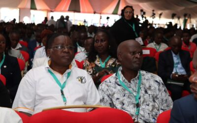

Driving Equity, Inclusion, and Social Justice: Commissioner Dr. Wamalwa Dennis at the Devolution Conference 2025 Homa Bay County, Kenya. August 12–15, 2025.

The serene lakeside city of Homa Bay transformed into a national hub of dialogue and decision-making as leaders, policymakers, development partners, civil society, and private sector actors gathered for the Devolution Conference 2025. This year’s edition, held under the inspiring theme “For the People, For Prosperity: Devolution as a Catalyst for Equity, Inclusion and Social Justice”, provided a critical platform to take stock of the progress, challenges, and opportunities in Kenya’s devolved system of governance.
Hosted at Homa Bay National School, the four-day event aimed to bridge Kenya’s socio-economic divide by exploring ways to re-engineer county governments for accelerated development, inclusion, and social justice. The conference brought together high-level government officials, county leadership, legislators, development experts, and human rights defenders to examine practical policy and legislative interventions that could strengthen devolution’s impact across the country.
Commissioner Dr. Wamalwa Dennis, representing the Kenya National Commission on HumanRights (KNCHR), participated actively in the proceedings. His presence signified the Commission’s enduring commitment to ensuring that the promise of devolution, as envisioned in Article 174 of the Constitution, is anchored in human rights, dignity, and equality for all Kenyans.
The program was organized around three thematic days, each delving into specific aspects of devolution:
- Day 1 – Good Governance (August 13, 2025): Discussions centered on strengthening transparency, accountability, and participatory decision-making in county governments. Delegates examined the principles of good governance as the foundation for effective service delivery and public trust. High-level plenaries featured perspectives from governors, legislators, the judiciary, and civil society leaders, providing a broad view of the governance landscape.
- Day 2 – Human Rights and Social Justice (August 14, 2025): This day resonated deeply with Dr. Wamalwa’s mandate, focusing on embedding socio-economic, political, civil, and cultural rights into the fabric of county governance. Emphasis was placed on promoting inclusion, diversity, and equality, with particular attention to marginalized groups such as persons with disabilities, women, youth, and intersex persons. Dr. Wamalwa’s engagement during this day reaffirmed his role as a leading voice for equity in service delivery and for ensuring that local governance mechanisms protect and empower vulnerable communities. Side-events addressed key areas including disability inclusion, equitable access to health care, and the use of technology to bridge service delivery gaps.
- Day 3 – Financing Equity and Inclusion (August 15, 2025): The final thematic day turned the spotlight on resource allocation and financial fairness. Sessions explored the role of county governments in facilitating access to finance for entrepreneurs, especially Micro, Small, and Medium Enterprises (MSMEs), and ensuring equitable division of revenue between national and county governments. Delegates examined how targeted investments in marginalized areas and special interest groups could reduce systemic inequalities.
In addition to the main plenary sessions, the conference hosted a rich array of side-events that created opportunities for sector-specific discussions. Topics ranged from climate-resilient planning, sustainable infrastructure, and universal health coverage to participatory governance, innovation in service delivery, and the localization of the Sustainable Development Goals (SDGs). These forums allowed experts and practitioners to share best practices, present innovative solutions, and form partnerships for future collaboration.
The hosting of the conference in Homa Bay provided more than just a venue it became a showcase for the county’s cultural heritage, natural beauty, and economic potential. Delegates were invited to explore the Cultural Village at Homa Bay Tourist Hotel, experience guided island tours, enjoy game drives at Ruma National Park, and witness the captivating sunsets along the Lake Victoria pier. These experiences highlighted how devolution can support not only governance and service delivery but also tourism, cultural preservation, and local economic growth.
The event concluded with the presentation of a joint communique, capturing actionable policy, legislative, and administrative measures agreed upon by stakeholders. For Commissioner Dr.Wamalwa Dennis, the conference served as both a platform for advocacy and a reaffirmation of KNCHR’s role in ensuring that devolution’s gains are inclusive and grounded in social justice. His participation emphasized that equity is not an abstract ideal but a measurable goal that can be achieved through deliberate policy action, strong governance, and unwavering commitment to the rights and dignity of every Kenyan.
The Devolution Conference 2025 not only celebrated Kenya’s journey in devolved governance but also set a renewed agenda for the future one in which no community is left behind, and prosperity truly becomes a shared reality for all.